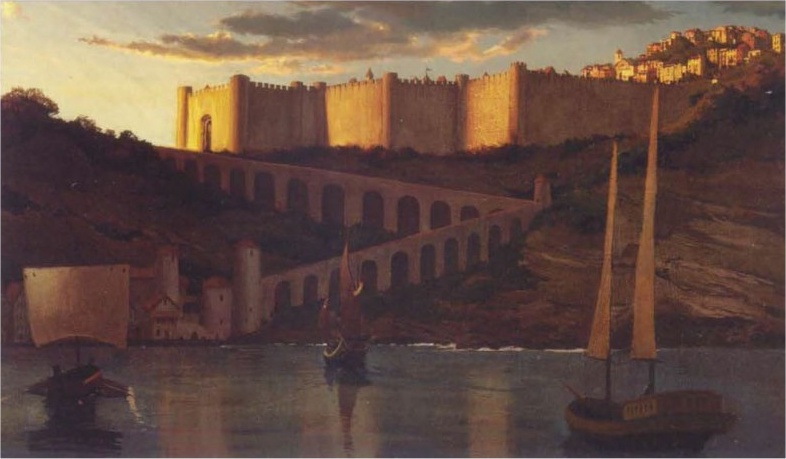

Montéloy
Écoute petit, Montéloy, la ville du commerce, est un merveilleux endroit pour te réaliser, aussi longtemps que tu n'es pas un elfe... ou un nain... ou bien un halfelin... ou toutes ces autres races. Bref, si tu es humain, tu trouveras ici d'excellentes opportunités !
- Isthana Ro, Maître de la guilde des voleurs
La cité fortifiée de Montéloy [Hillsfar] se situe sur la côte sud de la Mer de Lune, juste au nord de la forêt de Cormanthor, à la jonction de trois routes importantes. Ce qui a commencé comme une escale commerciale commode sous le contrôle de la Cour Elfique est devenue l'une des plus grandes puissances de la Mer de Lune, un pouvoir basé sur le libre-échange et un racisme brutal. Les aventuriers, souvent cosmopolites et issus de diverses races, se rendent rapidement compte qu'il est difficile de passer du temps à l'intérieur de l'enceinte de la ville et donc l'évite, lui préférant Arbrelfique [Elventree] ou L'Étape [The Stop], à proximité.
Passé récent
Pour comprendre comment Montéloy est devenue ce qu'elle est aujourd'hui, il faut remonter en 1354 CV, lorsque le magicien Maalthiir, l'un des conseillers de la ville, accéda à la notoriété en tant que Premier Seigneur. Au cours des trois années qui suivirent, Maalthiir dissout le conseil, cimenta son pouvoir en fusionnant diverses compagnies de mercenaires qui formèrent les Plumes Rouges, et commença une campagne qui fit des non-humains les boucs émissaires de tous les problèmes de la ville. A cette époque, Maalthiir adopta également les deux grandes lois qui définissent Montéloy :
- La Grande Loi du Commerce : ne pas interférer dans tout commerce légitime.
- La Grande Loi de l'Humanité : seuls les humains sont autorisés dans Montéloy.
Montéloy prospéra grâce à la Grande Loi de Commerce, se développant considérablement durant deux décennies, jusqu'en 1372 CV, lorsque Pénombre [Shade Enclave] réapparue et que les néthérisses lancèrent une série d'attaques qui embrasa une grande partie de Faerûn. S'alliant avec Château-Zhentil et la maison Dlardrageth des elfes du soleil de Cormanthor pour combattre dans les Vaux, Montéloy leva une armée et plaça des garnisons dans les villages environnants. Mais deux ans plus tard, Montéloy renia son alliance avec la maison Dlardrageth. Les elfes du soleil répondirent alors en attaquant l'armée de Montéloy qui campait à la Pierre Levée [Standing Stone], écrasant les Plumes Rouges, puis continuèrent leur avancée jusqu'à Montéloy où ils démolirent la tour du Premier Seigneur, forçant Maalthiir à fuir dans la clandestinité. Puis, profitant de la faiblesse de la ville, Château-Zhentil trahit à son tour Montéloy, écrasa la garnison de Yûlash et envahit les territoires à l'ouest de Montéloy. En quelques mois, les zhentilars étaient aux portes de la cité et Fzoul Chembryl fixa les conditions de la reddition au terme de laquelle Château-Zhentil prenait le contrôle de la Chevauché de la Mer de Lune [Moonsea Ride], cette importante route qui descend jusqu'au Cormyr et à Arabel, au sud.
Mais la suprématie de Château-Zhentil fut de courte durée. En 1383 CV, les néthérisses se défirent des zhents et rasèrent Château-Zhentil ainsi que la Citadelle du Corbeau. Les troupes d'occupation zhents du territoire de Montéloy perdirent de fait le soutien de leur patrie et abandonnèrent leurs postes. La ville tomba alors dans le chaos pendant trois ans, jusqu'à 1386 CV, lorsque Maalthiir reparut avec des Plumes Rouges réorganisées. Il marcha sur Montéloy et se réinstalla comme Premier Seigneur. Puis il fit porter la responsabilité de la chute de Montéloy sur les fey'ri de la maison Dlardageth - une souche démoniaque qui sont aux elfes ce que les tieffelins sont aux humains - et blâma les libertés que les zhents avaient offert aux non-humains. La rhétorique de Maalthiir, hostile à toutes ces races, passa très bien auprès de la population en général, laquelle avait souffert de l'absence d'ordre. Tous les non-humains dans la ville furent alors expulsés, y compris les demi-humains tels que les demi-elfes et les demi-orcs, et les récalcitrants envoyés à l'Arène pour une série de jeux de célébration qui dura un mois.
En 1394 CV, Maalthiir nota que les elfes de Myth Drannor représentaient une réelle menace pour Montéloy, en l'absence de ses anciens alliés. Alors, pour apaiser la Cour Elfique de Myth Drannor, il relâcha sa politique liée à la Grande Loi de l'Humanité pour les terres autour de Montéloy et forma un conseil composé d'humains, de demi-elfes et d'elfes afin de faire des affaires avec les pays voisins de Montéloy, au nom du Premier Seigneur. Ce conseil de marionnettes relevait presque du spectacle, mais il fut suffisant pour encourager le commerce et renouveler un pacte de neutralité entre Myth Drannor et Montéloy, malgré les politiques racistes qui perduraient en ville.
Montéloy aujourd'hui
MONTÉLOY AUJOURD'HUI
Ce chapitre décrit la ville au début de l'époque de la Colère des Démons, en 1492 CV.
En 1460 CV, Maalthiir mouru lors d'une vaine tentative pour devenir une liche. À sa place, un conseil inefficace de marchands et de maîtres de guildes prit le contrôle de Montéloy. Bien entendu, plusieurs membres du conseil et des Plumes Rouges convoitèrent le titre vacant de Premier seigneur, et cela conduit à de nombreux combats entre partisans dans les rues. Torin Nomerthal, un commandant des Plumes Rouges, forma alors une alliance qui devint la Tour de Garde. Cette alliance était constituée des Plumes Rouges, de la guilde des magiciens de la ville, de diverses compagnies de mercenaires, et de quelques soldats nétherisses dont l'allégeance pouvait être achetée. En 1487 CV, la ville flottante nétherisse de Thultanthar tomba sur Myth Drannor, détruisant les deux villes. Le Premier Seigneur Torin Nomerthal, qui avait entre temps rebaptisé la Tour de Garde en Plumes Rouges, exécuta les shadovars survivants et, ne craignant plus les représailles des elfes, commença la deuxième purge de Montéloy. Il réaffirma également fermement les Grandes Lois sur les murs de la ville, cultivant une xénophobie maniaque parmi les citoyens humains. Bien que les non-humains soient toujours autorisés à vivre et à travailler en dehors de la ville, Torin a depuis mis en place des lois punitives et de lourdes taxes qui font qu'ils ne sont pas bien plus que des serfs. Une fois de plus, les seuls non-humains en ville se trouvent à l'Arène, attendant la mort ou la gloire, à la merci de la foule aboyante de Montéloy.
La religion à Montéloy
LA GRANDE LOI DE L'HUMANITÉ
La vie à Montéloy est rude pour les non-humains. Comme il n'y a qu'une seule façon de se rendre réellement à l'intérieur de la ville, par l'unique porte, les Plumes Rouges qui sont perpétuellement à la recherche de non-humains déguisés, magiquement ou non, peuvent facilement questionner toutes le personnes qui tentent d'entrer. Ceux qui sont capturés à la porte, à la descente d'un bateau ou trouvés en ville, sont immédiatement condamnés à l'Arène, à perpétuité. Leur vie est souvent très courte et les corps de ceux qui meurent dans l'arène sont bénis par les clercs de Tempus, puis broyés pour faire de l'engrais à destination des fermes environnantes.
La religion n'est pas à Montéloy une force motrice, comme elle peut l'être dans d'autres villes de la Mer de Lune. En raison de son histoire tumultueuse avec le Zhentarim, Montéloy n'a pas de suivants notables de Baine. Au lieu de cela, et en raison de la grande industrie de brasserie que compte la ville, les cultes de Lliira et de Chauntéa sont beaucoup plus populaires. La Maison du Bonheur est un lieu animé où des rubans et des fleurs décorent les murs et où la bière et l'hydromel sont servis par les danseurs de joie de Lliira. Tous sont les bienvenus chez Lliira. Les musiciens et les danseurs font le spectacle pour des fidèles saouls qui ont laissé leurs problèmes à la porte. Le temple de Chauntéa est pour sa part un modeste bâtiment appelé Lastholme et qui est fréquenté principalement par des agriculteurs. Terre du très demandé hydromel, les partisans de la Grande Mère font un commerce florissant d'aliments et de boissons, mais opèrent également un orphelinat animé, lequel a été récemment agrandi pour offrir plus de places suite à l'augmentation croissante d'enfants non désirés à Montéloy.
Les adeptes de Tempus se rassemblent à la Chapelle des Épées. Bien que participants réguliers des jeux de l'Arène, ce n'est pas un secret que les Battleguards??? [Battleguards] ne soutiennent pas l'esclavage des non-humains qui sont obligés de se battre jusqu'à la mort pour rien de plus que le crime d'être né. Les mots de la litanie de Tempus, "ne dénigrer aucun ennemi et les respecter tous", sont sculptés au-dessus des portes du temple, manifestation silencieuse pour les torts causés en ville. De petits sanctuaires sans personnel à Umberlie, Malar et Torm peuvent également être trouvés en ville.
Lieux avoisinants
Étant donné que les non-humains ne peuvent entrer à Montéloy sans être condamné à mort dans l'Arène, beaucoup se retrouvent en dehors de la ville. Il y a en effet de nombreuses fermes autour de la cité, qui appartiennent à des humains mais aussi à d'autres races, même si ces dernières doivent payer de lourds impôts pour garder leurs maisons.
Le village d'Arbrelfique est idyllique, paisible et convivial pour les non-humains chassés de Montéloy, en particulier pour les elfes, les demi-elfes, et les membres des Ménestrels. Situé à l'est de Montéloy, en bordure de la forêt de Cormanthor depuis 702 CV, c'est un lieu de réconfort pour ceux qui se sont échappés de l'oppression de Montéloy. Les habitants d'Arbrelfique construisent leurs maisons dans les arbres de cette vieille forêt, et l'ensemble se marie harmonieusement avec l'environnement naturel, les maisons étant généralement reliées par des ponts de corde. Bien que le village produise une variété de produits naturels et d'artisanat elfique, il n'y a pas de comptoirs ou d'étapes pour les caravanes, et les commerçants y passent rarement. Les visiteurs les plus courants sont en fait des personnes qui ont été repoussés aux portes de Montéloy parce que leur groupe comportait des non-humains. Et ces rares visites deviennent fréquentes lors des fêtes et des célébrations.
Les habitants d'Arbrelfique vénèrent un grand nombre des divinités d'alignement bon ou de la nature. Le Temple de la Licorne, dédié à Mailikki, est le seul vrai bâtiment de culte, et à ce titre il fait partie des attractions du village. Mais Arbrelfique possède plusieurs autres lieux de culte. Celui qui possède le plus de personnel est celui de Mystra, appelé le Cairn des Mystères, dont le prêtre est connu sous le titre de la Sentinelle. Un autre est celui de Sélune connu comme la Cave de l'Ombre d'Argent. Le troisième serait celui d'Eilistraée, à l'extérieur du village, appelé la Pierre Dansante. D'autres plus petits encore sont ceux de Chauntéa, Silvain, Eldath, Corellon Larethian et Rillifane Rallthil.
Les services d'un lanceur de sorts peuvent être obtenus au Temple de Mailikki, à la Cave de l'Ombre d'Argent, à la Pierre Dansante ou encore au Cairn des Mystères. Depuis près d'un siècle, le héraut d'Arbrelfique est le célèbre barde elfe Elanil Elassidil. Ses chansons sont le cœur et l'âme du village, surtout depuis que le vieux seigneur demi-elfe d'Arbrelfique, Dessaer, n'est plus de ce monde.
SPOILER
Suite à l'épisode du Mal Élémentaire, Mulmastre a beaucoup de mal à répondre à la demande de vivres de sa population suite à la détonation d'un orbe de dévastation dans le port. Montéloy étant considéré comme le grenier de la Mer de Lune, de nombreux réfugiés de Phlan s'y sont alors rendus pour pouvoir se nourrir. Les Factions ont également dépêchés des agents sur place pour surveiller les événements.
Plusieurs réfugiés de Phlan se sont rendus à Arbrelfique à la recherche d'alliés ou sur les conseils des Ménestrels, qui sont établis au village dans la Maison de la Harpe depuis des générations. Et d'autres factions ont récemment mis en place des camps autour du village. Leurs premiers agents viennent d'ailleurs tout juste d'arriver. Mais alors que l'attention des factions se porte sur Arbrelfique, le village est en passe de devenir le centre d'importantes intrigues dans un avenir proche. Chaque jours de nouveaux aventuriers arrivent.
Juste au nord d'Arbrelfique, le village de Phare a récemment vu le jour autour d'un ancien phare abandonné connu comme le phare d'Élua, situé à des miles de la côte depuis la baisse du niveau de la Mer de Lune. Le village est peuplé d'anciens habitants non-humains de Montéloy et suit généralement Arbrelfique pour ce qui est de la politique.
L'ancien village de Yûlash, anciennement rallié à Montéloy, est maintenant largement abandonné. Les tunnels souterrains sous le village seraient soit-disant envahis par des choses immondes venues d'Outreterre. Mais peu sont disposés à aller le vérifier...
L'Étape est un relais pour caravanes, situé à mi-chemin entre Montéloy et Yûlash, qui a grandi et est maintenant un hameau consacré à l'entretien des caravanes et aux nombreuses fermes environnantes. En raison des fréquentes caravanes qui y passent, l'Étape est relativement cosmopolite pour une terre si proche de Montéloy. Beaucoup de réfugiés de Phlan ont aménagé ici, suite à la dévastation qui a conduit aux pénuries alimentaires de Mulmastre, dans l'espoir de trouver de quoi aider leurs familles restées dans la Ville de tous les Dangers. Toujours proche de Montéloy, mais avec toutefois quelques Plumes Rouges pour la surveiller, l'Étape est un lieu fréquenté par de nombreux espions, brigands et bons à rien. Après Arbrelfique, l'Étape est l'endroit où l'on rencontre le plus d'aventuriers.

Écrit par Greg Marks, traduit par blueace